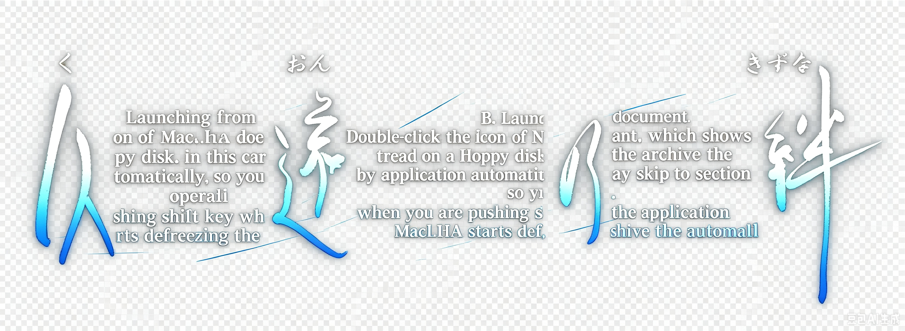

在浩瀚的刻之洪流中，生命宛如水泡般乍現即逝，被洗去的是相偎的足跡和身影，留下的是永恆的思念與牽絆。
違背天命的罪與罰，換來千年的等待與悲戀，切不斷的因緣與悲劇，隨著命運之輪一次次的重複著。
不論在轉生的彼方是久違了的相逢，抑或再一次生與死的別離，讓那無法實現的心願與誓言，化為生世相隨的久遠之約。
即使是在下一個千年或萬年.....
- Game Theme -
资料整理：AKI。特别感谢：Neophoenix、结月lalalll
本站 久远之绊 的所有内容在标明作者及译者后均可自由转载。